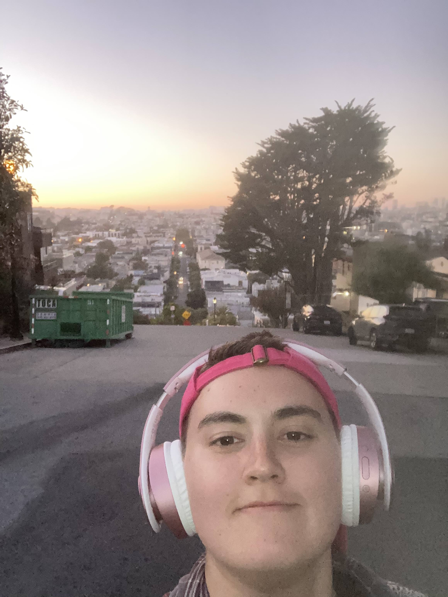

Summary Statement
Ut scelerisque est vel ipsum tempor, id fermentum arcu volutpat.
Curabitur malesuada purus porta, consectetur purus vel, viverra mi.
Sed luctus tincidunt accumsan. Suspendisse dapibus libero turpis,
quis ullamcorper ante auctor id. Nunc sollicitudin neque dui.
Education
Santa Clara University
Thinkful Bootcamp -- Data Analysis
Woodside Priory
Work Experience
August 2022 - October 2022
SFUSD, James Lick Middle School - SOAR Paraeducator
-
Assisted certified Special Education teacher, ERMHS therapist, BCBA therapist, and admin to implement and follow students’ BIP’s
-
Supported students with Emotional Disturbances in their IEP to regulate intense behaviors and emotions and create safety and calm in the classroom
-
Created classroom documents and plans to teach students about the impact of their actions through the lens of self-love and compassion
-
Taught the students academic lessons following a lesson plan when substitutes were not available
August 2020-August 2022
Child Advocates of Silicon Valley, San Jose - Court Appointed Special Advocate (CASA)
-
Created joy with foster youth through weekly in-person meetings and activities such as playing tag, going on walks, going to arcades, etc
-
Advocated for foster youth through written court reports and verbal recommendations in front of the judge
-
Provided emotional support for the foster youth through conversations and by offering alternative coping skills to replace maladaptive ones
-
Participated in weekly, online and in-person “Child-Family-Team” meetings to discuss youth’s wellbeing and case updates
Awards
- Communcation
- Writing
- Problem Solving
Awards and Activities
Fall 2017-Fall 2019
Vice President of Finance, Habitat for Humanity
Fall 2019-Winter 2020
SCU Women's Club Rugby